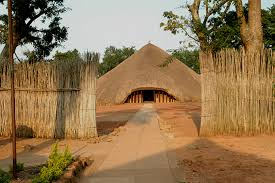

The Cultural Tourist Attractions

Kisubi Tombs
This is a place in Buganda Kingdom which is a burial grounds for their kings. It is located in Kampala
Mparo Tombs
This is the spacial Monument built by UPDF to recongise the work done by King Kabalega. Which is now the burial grounds for Bunyoro Kingdom kings
Nakayima Tree
This is a tree in Mubende where many cultural people believe in it, and make their prayers through it
Cultural Events that involves big mass
The Kabaka birthday run
The Massaza Cup
Embaluu by the Bagisu

Nyege Nyege Festival
Uganda Martyrs (Okulamagga)
Cultural Dance